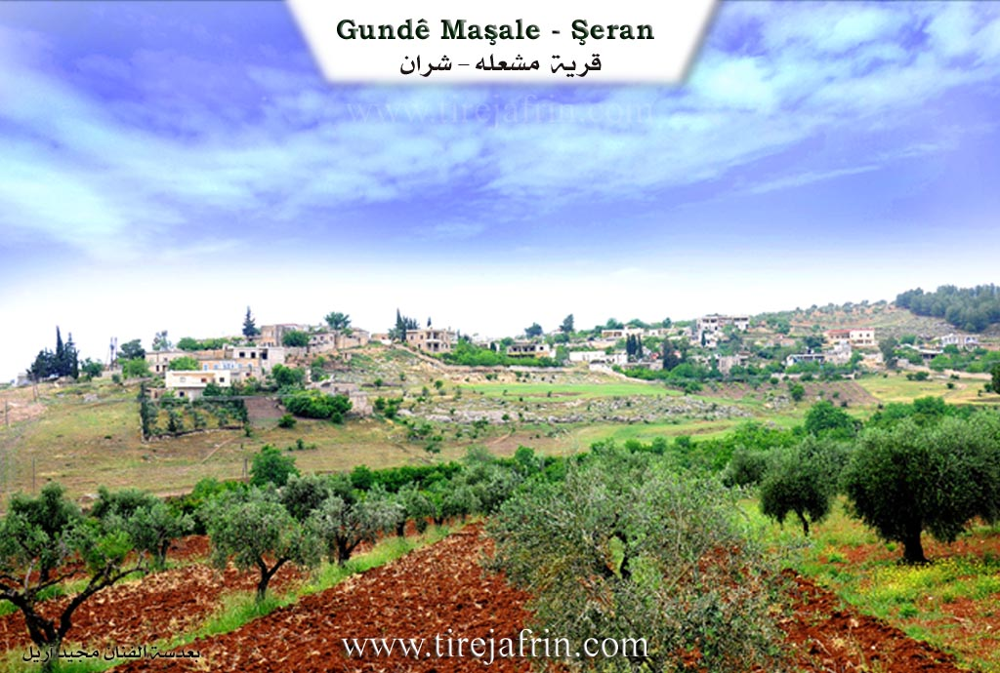
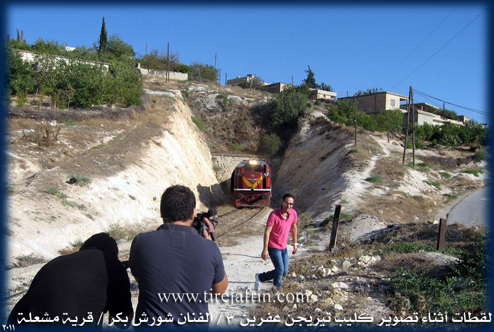
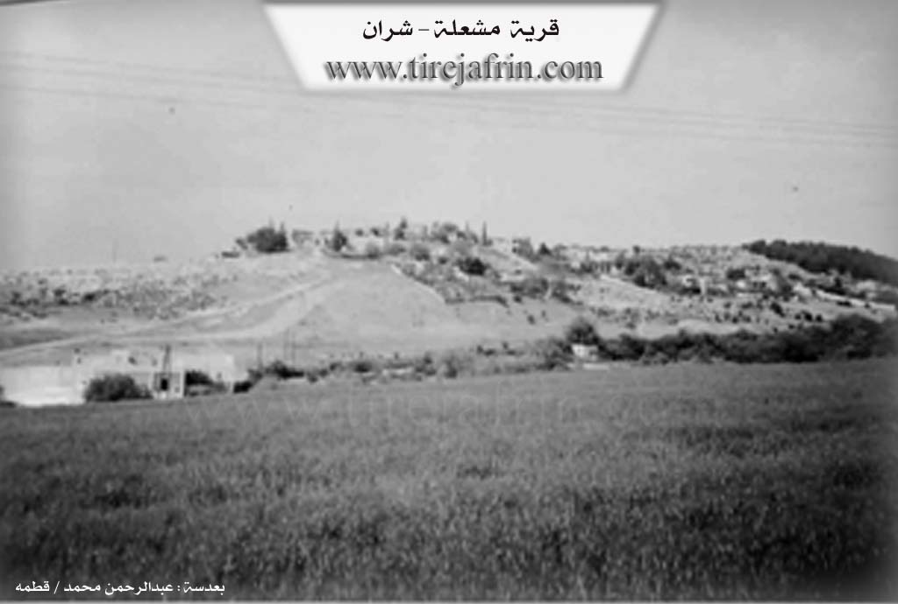

General Information
Nahiya (Subdistrict)
Şera
Also Known As
Mashalh, Me'šalê, مشعلة, مشله
Tribes
Ecel, Mila Xidirakî, Şîkêk
Families, Clans, etc.
Heyder Hemzo

Photos



Basic Information about Meşalê
Source: Afrin 366
Etymology: Derived from the exclamation 'Maşallah' due to the dense shade and beauty of fruit trees (apricot, walnut, pomegranate) that historically covered the area
Foundation Date/Period: Approximately 700 years ago
Number of Caves: 140
Hills: Bekerê
Shrines: Ziyareta Henan Menan
Other Landmarks: Reka Çîman, Meydankê
Summaries
I. Summary from TirejAfrin Site (English) of Meşalê
Source: https://www.tirejafrin.com/site/kura%20afrin%20%20sheran%20-%20Mashalh.htm
It is stated in the book جبل الكرد (عفرين) دراسة جغرافية Çiyayê Kurmênc (Efrîn): A Geographical Study regarding Meşelê:
Ibn al-Shihna and Yaqut al-Hamawi mentioned its name in the form of "Meşhela" and stated that the tomb of the Prophet David is located there, but we have not been able to determine the meaning of the name.
It is a medium-sized village located on the northern side of the valley of Kefer Cenê. The railway line and the Tunêla Meşelê (Meşelê train tunnel) pass by its northern side. Next to it is the well-known Ziyareta Evdê Henan. From the west, it overlooks an archaeological site, evidenced by the presence of pottery fragments and trimmed stones.
It is stated in the book عفرين .... نهرها وروابيها الخضراء Efrîn... Her River and Her Green Hills: Meşelê is a village located in Çiyayê Kurmênc, administratively belonging to the Şeran district of the Efrîn region, Heleb governorate. It is a small village situated on a mountainous rise, surrounded by slopes in the northern part of Çiyayê Seman on the southwestern foothills of a limestone plateau near the railway tunnel. It is located 5 km from the town of Şeran toward the southeast.
It is bordered to the north by a slope, a mountain rise, a valley planted with olive trees and vines, the Riya Kefer Cenê-Bilbil (Kefer Cenê-Bilbil road), Meydankê, and the village of Metîna. To the south, it is bordered by a valley, a slope, Mezarê Henan, the Kaniya Kefer Cenê (Kefer Cenê spring), the Riya Heleb-Efrîn (Heleb-Efrîn road), and the village of Kefer Mezê. To the west, there is a slope, an agriculturally fertile plain, the railway line, the village of Kortek, and Qurtqulaqa Mezin.
The number of its houses is approximately 60, and its age is about 400 years. It is one of the old villages, evidenced by the ancient construction in the area and the presence of building foundations made of huge dressed limestone, tombs, and wells carved into the rocks dating back to the Roman era. Its houses are made of mud and stone with wooden roofs, while the modern ones are made of stones and reinforced concrete. In the western side, there are old archaeological caves.
An electricity network is available, as well as drinking water from the Kaniya Kefer Cenê line which extends to the reservoir of the city of Efrîn. It is reached via a paved road branching off from the Riya Efrîn-Heleb (Efrîn-Heleb road) up to the Şeran district. The village contains a primary school and Mezarê Şêx Henan near the Efrîn road, as well as a mosque. There is also a railway tunnel on the northern side, under which the train passes to Meydan Ekbez and Turkey, coming from Heleb.
The residents work in the cultivation of grains, olives, and fruit trees such as pomegranates, apricots, walnuts, and almonds, as well as vegetables. These used to be irrigated from Kaniya Kefer Cenê, but currently, after the water was channeled to Efrîn, these orchards have begun to suffer from drought. It is a beautiful village in terms of weather, the abundance of surrounding trees, and its proximity to Kefer Cenê. Its population, according to the civil registry dated 31/12/2004, is 1002 people. The first to inhabit the village since its establishment was the family of Heyder Hemzo.
Village Mukhtar: Tonî Heyder Mihemed.
Sources of Information:
- Book: جبل الكرد (عفرين) دراسة جغرافية Çiyayê Kurmênc (Efrîn): A Geographical Study by د. محمد عبدو علي Dr. Mihemed Ebdo Elî.
- Book: عفرين .... نهرها وروابيها الخضراء Efrîn... Her River and Her Green Hills by عبدالرحمن محمد Ebdulrehman Mihemed from the village of Qetme.
- Studies of Navenda Tirej Soft / Ebdulrehman Hacî Osman.
- Some residents of the villages.
Preparation and execution: Manager of the Tirej Efrîn site: Ebdulrehman Hacî Osman 20/12/2013
II. Summary of Meşalê from Afrin 366
Source: https://www.youtube.com/watch?v=Unk9bjkXE9o
The village of Meşale is located in the Şerawa district of the Efrîn region, overlooking the plains of Heleb. According to local oral tradition, the settlement is ancient, with a history spanning approximately 700 years. An elder explains that the name Meşale is etymologically derived from the Arabic phrase "Maşallah." In the past, the village lands were densely covered with fruit trees, specifically apricot, walnut, and pomegranate. The greenery and shade were so impressive that observers would repeatedly exclaim "Maşallah," a name that eventually evolved into Meşale.
Historically, the residents of Meşale did not live in masonry houses. Instead, they inhabited the numerous caves found in the area; the host notes there are approximately 140 caves within the village boundaries. Over the centuries, the population shifted from cave dwelling to stone construction and eventually modern concrete housing, though the village retains a historic atmosphere with narrow, difficult roads. A significant historical infrastructure feature is the Reka Çîman (railway), which passed through the village territory connecting Ekbez to Heleb. Although the tracks are no longer present in some sections, having been covered or removed, the route remains a known landmark.
The spiritual entrance to the village is marked by the Ziyareta Henan Menan, a revered shrine and cemetery. The host pays extensive respects here, noting it as a resting place for thousands. Geographically, Meşale is situated on high ground with a view of neighboring villages such as Kefermizê, Kefercenê, Oxler, Metîna, and the hill or area of Bekerê. Water management is also highlighted, with a canal from the Meydankê dam project passing through the area to supply Efrîn and Ezaz.
The social narrative of Meşale focuses on respected elders and the reality of migration. The documentary features Ebû Şêxo, a former educator who taught for thirty five years in the Efrîn region, and Ebû Maher, a resident whose son lives in Almanya. These conversations highlight a community where many youths have emigrated, yet the elders maintain a strong connection to their land and the memory of its transformation from a shaded forest of caves to the village it is today.
II. Summary of Meşalê from Multi Channel
The documentary explores the historical and social landscape of Meşelê, a village situated in the Şera district of the Efrîn region. Known for its mountainous terrain and agricultural heritage, the village is defined by a deep history connected to regional infrastructure and changing times.
The most significant built landmark in Meşelê is its historic train tunnel, which dates back over a century. An elder named Ebdulhenan Hesen Cuma recounts stories passed down from his father, who worked on the tunnel. The villagers excavated the seven hundred meter passage entirely by hand using pickaxes and shovels. The tunnel connects Meydan Ekbes near Raco to Heleb and was originally part of the ambitious railway line intended to link Berlîn to the Hîcaz. Inside the tunnel, workers carved deep niches into the walls to take shelter whenever the steam and coal powered trains passed through. Ebdulhenan fondly recalls childhood memories of walking through the dark tunnel during Eid celebrations while trains expelled hot steam.
Another prominent figure in the documentary is Henîfe Mislim Reşîd, a woman over eighty years old who preserves much of the village history. She vividly remembers the era of the British and French mandates. According to Henîfe, British soldiers first arrived to guard the railway, followed later by the French. The villagers of Meşelê provided these foreign troops with bedding, food, and bread while they guarded the tunnel against sabotage and explosives that were frequently placed on the tracks.
Historically, Meşelê was an exceptionally fertile agricultural hub, nourished by abundant water from the nearby area of Kefircenê. Henîfe describes a time when the village was lush with pomegranates that rivaled those of Basûtê, as well as walnuts, apricots, and diverse vegetables. In those days, trucks would transport the harvest to Heleb up to three times a night. Villagers also milled their grain at a water mill near Kefircenê and fetched water from Qeredebê. Unfortunately, the water sources from Kefircenê eventually dried up or were cut off. Today, farming relies heavily on deep groundwater. A local farmer named Mahir explains how they now use a sixty meter deep well to irrigate smaller crops of tomatoes, peppers, eggplants, and newly planted fruit trees.
The documentary also highlights the modern social fabric of Meşelê, which now includes displaced Arab families living alongside the original inhabitants. A boy named Beybers Casim from Hims is shown grazing goats under the mulberry trees alongside local children. Henîfe also discusses her interactions with Turkmen populations in Sicû and people in Ezaz, demonstrating the interconnectedness of the region. Despite the severe loss of historical water sources and the changing demographics, the village retains its distinct identity, rooted in its landmark railway tunnel and enduring agricultural traditions.
II. Summary of Meşalê from Multi Channel 2
The village of Meşelê is an ancient settlement located in the Şera district of the Efrîn region. Historically recorded as Mişale in the geographical dictionary compiled by Yaqût El Hemewî, the village is situated on a mountainous elevation north of the Wadiyê Kefircenê. According to local elders, the current inhabitants have lived in the village for approximately 500 years, but the area boasts a much deeper history. Archaeological remains including ancient caves, wells, and Roman era water channels indicate continuous human habitation spanning eras before the Romans, the Roman era itself, the Byzantine period, and the Islamic conquests.
The social fabric of the village is defined by a deep history of coexistence between Kurdish and Arab populations. The original Kurdish residents belong primarily to the Şîkêk tribe, specifically identifying with the Mila Xidirakî or Şêx Xidir branch. Over a century ago, Arab families from the Ecel tribe migrated from the areas around Ezaz and settled alongside them. The two groups share strong ties of intermarriage and mutual partnership. In recent times, the village has also welcomed internally displaced persons from areas such as Hims, Heleb, Anadan, and Et Tel, many of whom reside in a nearby camp and face difficult living conditions.
Meşelê is highly regarded for its significant religious and historical landmarks. The most prominent is Ziyareta Henan, a sacred shrine and the site of the largest cemetery in the Efrîn region. People from surrounding villages bring their deceased to be buried there due to the perceived holiness of the area. According to local lore, the tomb is believed to belong to Yuhanna El Ma'medan or a soldier from the army of the prophet Dawûd. The site contains graves from Jewish, Christian, Pagan, and Islamic periods. The accompanying mosque was restored upon older Roman foundations in the year 1303 AH during the reign of Siltan Ebdilhemîd under the direction of the governor of Heleb, Huseyîn Cemîl Paşa. Additionally, the village is home to Bîra Cefer, an ancient shrine historically visited by the Êzîdî community during their festivals.
Economically and geographically, Meşelê was traditionally famous for its abundant water and lush orchards. It featured springs such as Sêkaniyê, meaning three springs in Kurmanji, and water flows arriving from Kefircenê that poured into the Efrîn river near Qestel Kişik. The valleys were once dense with pomegranate orchards that rivaled those of Basûtê, alongside walnuts, almonds, and wild blackberries. Its shaded valleys made it a major tourist destination for visitors from Heleb and Şam, especially for Muslim and Armenian sightseers on weekends. Today, due to changing climates and reduced rainfall, water levels have dropped, and the village relies heavily on its 25,000 olive trees.
Transcriptions and Subtitles
| Source | Video | Subtitles | Transcript |
|---|---|---|---|
| Afrin 366 1 | Watch Video | Download SRT | View Transcript |
| Multi Channel 1 | Watch Video | Download SRT | View Transcript |
| Multi Channel 2 | Watch Video | Download SRT | View Transcript |
Foundation/Origin Information of Meşalê
The first to inhabit since the village's establishment was the Haider Hamzo family.
Source: TirejAfrin Site
Possible Village Name Meaning of Meşalê
Ibn al-Shahna and Yaqut al-Hamawi mentioned its name in the form "Mashahla".
Source: TirejAfrin Site
The village's original name was Dur Bê, but it was changed to Meşalê after people admiring its abundant pomegranates, figs, and grapes would exclaim "Mashallah," which evolved into the current name.
Source: Afrin 366 Transcript
V. Links
- Tirej Afrin:
https://www.tirejafrin.com/site/kura%20afrin%20%20sheran%20-%20Mashalh.htm - Jawlat:
https://www.youtube.com/watch?v=8p8-75rOzMY - Link:
https://www.youtube.com/watch?v=nwmhDXZkwFg - Video:
https://www.youtube.com/watch?v=0H62JSyLxhQ - Link:
https://www.youtube.com/watch?v=uGOxopuCPOo - Link:
https://www.youtube.com/watch?v=3-S5kaDPenw - Afrin 366:
https://www.youtube.com/watch?v=Unk9bjkXE9o